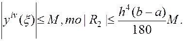
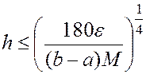
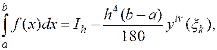
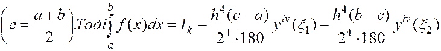
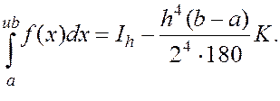
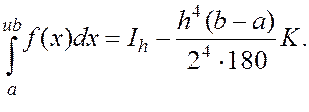
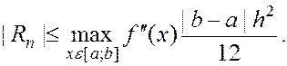

Розберемо один із таких прийомів на прикладі методу Сімпсона. Нехай
Вибір кроку інтегрування за методом Рунге
Під час виконання обчислень, буває дуже важливим наперед спрогнозувати, який крок розбиття треба вибрати щоб досягти заданої точності. Для вибору кроку інтегрування можна скористатися виразом залишкового члена. Візьмемо, наприклад, залишковий член у формі Сімпсона:
Якщо  По заданій точності є методу інтегрування, з останньої нерівності визначаємо потрібний крок:
.
Але такий спосіб вимагає оцінки  , що на практиці не завжди є можливим. Тому користуються іншими прийомами визначення оцінки точності, які в процесі обчислень дозволяють вибрати потрібний крок h.
, що на практиці не завжди є можливим. Тому користуються іншими прийомами визначення оцінки точності, які в процесі обчислень дозволяють вибрати потрібний крок h.
Розберемо один із таких прийомів на прикладі методу Сімпсона. Нехай

де - наближене значення інтеграла, обчислене з кроком h. Зменшимо крок удвічі, розбивши відрізок (а,б) на дві частини (а,с) і (с,б)
Приспустимо, що змінюється повільно, так що майже стала величина:
Тоді
 і 
і 
Якщо аналітичний вирах підінтегральної функції відомий, то виникає запитання: як оцінити похибку чисельного інтегрування за формулою (8) (похибка методу)?. Оскільки, здійснюючи заміну підінтегральної функції многочленом Лагранжа, ми відкидали залишковий член, то, виконавши ряд громіздких перетворень (див. (8) ), отримаємо формулу для залишкового члена у формулі трапецій (8).
З останньої формули видно, що при формула (8) дає значення інтегралу з надлишком, а при з недостачею. Врахувавши, що hn=b-a, знайдемо кінцевий вигляд для оцінки похибки методу інтегрування з формулою трапецій:
